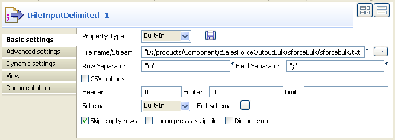
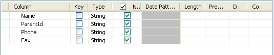
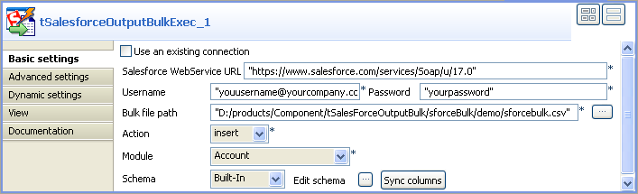
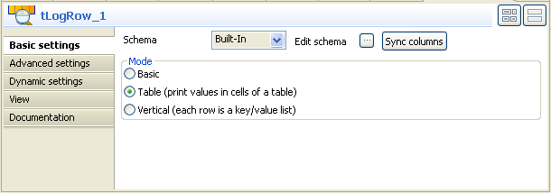
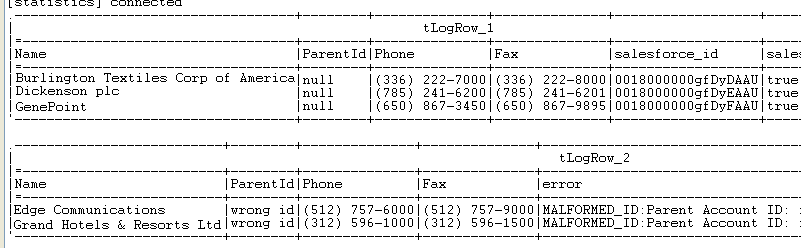

Les composants tSalesforceOutputBulk et tSalesforceBulkExec sont généralement utilisés ensemble pour générer en sortie le fichier défini et exécuter ensuite les actions souhaitées sur votre fichier, dans votre Salesforce.com. Cette exécution en deux étapes est unifiée dans le composant tSalesforceOutputBulkExec. L’intérêt de proposer deux composants séparés réside dans le fait que cela permet de procéder à des transformations avant le changement des données dans la base de données.
|
Famille de composant |
Business/Cloud | ||||
|
Fonction |
Le composant tSalesforceOutputBulkExec exécute les actions définies sur les données .csv pour Salesforce.com. | ||||
|
Objectif |
En tant que composant dédié, le tSalesforceOutpuBulkExec permet d’optimiser les performances lors des opérations définies sur les données, dans votre Salesforce.com. | ||||
|
Basic settings |
Use an existing connection |
Cochez cette case pour utiliser une connexion établie à partir du tSalesforceConnection. Une fois cochée, la liste Component List apparaît, et vous permet de sélectionner le composant tSalesforceConnection devant être utilisé. Pour plus d’informations, consultez la section intitulée « Propriétés du tSalesforceConnection ».
| |||
|
|
Salesforce Webservice URL |
Saisissez l’URL du service Web permettant de se connecter à la base de données Salesforce. | |||
|
|
Username et Password |
Saisissez les informations d’authentification de l’utilisateur au service Web. | |||
|
|
Salesforce Version |
Saisissez la version de Salesforce que vous utilisez. | |||
|
|
Bulk file path |
Chemin d’accès au répertoire où sont stockées les données de masse à traiter. | |||
|
|
Action |
Vous pouvez effectuer l’une des opérations suivantes sur les données de l’objet Salesforce : Insert : insérer les données. Update : mettre les données à jour. Upsert : mettre à jour et insérer les données. | |||
|
|
Module |
Sélectionnez l’objet adéquat dans la liste. Custom Object : cette option fait apparaître le champ Custom Module Name dans lequel vous pouvez saisir l’objet auquel vous souhaitez vous connecter. | |||
|
|
Schema et Edit Schema |
Un schéma est une description de lignes, i.e., il définit le nombre de champs qui sont traités et passés au composant suivant. Le schéma est soit local (built-in) soit distant dans le Repository. Cliquez sur Edit Schema pour modifier le schéma. Notez que si vous modifiez le schéma, il devient automatiquement built-in. Cliquez sur Sync columns pour récupérer le schéma du composant précédent. | |||
|
Advanced settings |
Rows to commit |
Saisissez le nombre de lignes devant être traitées par lot de données. | |||
|
|
Bytes to commit |
Saisissez le nombre d’octets par lot de données devant être traités. | |||
|
|
Use Socks Proxy |
Cochez cette case si vous souhaitez utiliser un proxy. Dans ce cas, vous devez renseigner les paramètres du proxy dans les champs qui apparaissent, une fois la case cochée. | |||
|
|
tStatCatcher Statistics |
Cochez cette case pour collecter les données de log au niveau du composant. | |||
|
Utilisation |
Ce composant est utilisé comme composant de sortie. Il nécessite un composant d’entrée. | ||||
|
Limitation |
Les données de masse à traiter dans Salesforce.com doivent être au format .csv | ||||
Ce scénario décrit un Job à quatre composants qui charge des données en masse dans Salesforce.com, exécute les actions définies, et affiche les résultats d’exécution du Job dans la console.
Avant de réaliser ce Job, vous devez préparer votre fichier d’entrée, contenant les données devant être traitées par le Job. Dans cet exemple, le fichier sforcebulk.txt, contient des informations relatives aux clients.
Afin de créer et exécuter le Job, procédez comme suit :
Glissez-déposez de la Palette dans l’espace de modélisation graphique un composant tFileInputDelimited, un tSalesforceOutputBulkExec, et deux tLogRow.
Utilisez un lien Row > Main pour connecter le tFileInputDelimited au tSalesforceOutputBulkExec.
Utilisez un lien Row > Main et un lien Row > Reject afin de connecter le tSalesforceOutputBulkExec aux deux tLogRow respectifs.
Double-cliquez sur le tFileInputDelimited afin d’afficher sa vue Component et définir ses propriétés.
Dans la liste Property Type, sélectionnez Repository si vous avez déjà stocké votre connexion au serveur Salesforce dans le nœud Metadata de la vue Repository. Les propriétés sont automatiquement renseignées. Si vous n’avez pas défini la connexion au serveur localement dans le Repository, remplissez les champs manuellement, après avoir sélectionné Built-in dans la liste Property Type.
Pour plus d’informations concernant la création des métadonnées de fichier délimité, consultez le Guide utilisateur de Talend Open Studio.
A côté du champ File name/Stream, cliquez sur le bouton afin de sélectionner votre fichier d’entrée, par exemple sforcebulk.txt.
Dans la liste Schema, sélectionnez Repository, puis cliquez sur le bouton [...] pour ouvrir une boîte de dialogue dans laquelle vous pourrez sélectionner le schéma à utiliser pour ce composant. Si vous n’avez pas défini votre schéma localement dans les métadonnées, sélectionnez Built-in dans la liste Schema, puis cliquez sur le bouton [...] à côté du champ Edit schema, afin d’ouvrir une boîte de dialogue où vous pourrez définir le schéma manuellement. dans ce scénario, le schéma se compose de quatre colonnes : Name, ParentId, Phone et Fax.
Configurez les autres propriétés selon votre fichier d’entrée, comme Row Separator, Field Separator...
Double-cliquez sur le composant tSalesforceOutputBulkExec afin d’afficher sa vue Component et définir ses propriétés.
Dans le champ Salesforce WebService URL, utilisez l’URL par défaut du service Web Salesforce, ou saisissez l’URL à laquelle vous souhaitez accéder.
Dans les champs Username et Password, saisissez votre identifiant et votre mot de passe de connexion au service Web.
Dans le champ Bulk file path, parcourez votre répertoire jusqu’à l’emplacement où vous stockez les données .csv devant être traitées.
![[Note]](../images/note.png)
Le fichier de masse à traiter doit être au format .csv.
Dans la liste Action, sélectionnez l’action à effectuer sur les données de masse, insert dans cet exemple.
Dans la liste Module, sélectionnez l’élement auquel vous souhaitez accéder, Account dans cet exemple.
Dans la liste Schema, sélectionnez Repository, puis cliquez sur le bouton [...] afin d’ouvrir une boîte de dialogue dans laquelle vous pourrez sélectionner le schéma du Repository à utiliser pour ce composant. Si vous n’avez pas défini votre schéma localement dans les métadonnées, sélectionnez Built-in dans la liste Schema, puis cliquez sur le bouton [...] à côté du champ Edit schema afin d’ouvrir une boîte de dialogue où vous pourrez définir manuellement le schéma. Dans cet exemple, définissez le schéma comme précédemment.
Double-cliquez sur le tLogRow_1 afin d’afficher sa vue Component et définir ses propriétés.
Cliquez sur le bouton Sync columns afin de récupérer le schéma du composant précédent.
Sélectionnez le mode Table afin d’afficher les résultats d’exécution dans un tableau.
Répétez l’opération pour le tLogRow_2.
Sauvegardez votre Job et appuyez sur F6 afin de l’exécuter.
Dans la console de la vue Run, vous pouvez vérifier les résultats d’exécution.
Dans le tableau du tLogRow_1, vous pouvez lire les données insérées dans Salesforce.com.
Dans le tableau du tLogRow_2, vous pouvez lire les données rejetées à cause d’une incompatibilité avec les éléments Account auxquels vous avez accédé.
Si vous souhaitez transformer les données d’entrée avant de les charger, vous devez utiliser un tSalesforceOutputBulk et un tSalesforceBulkExec pour réaliser le Job complet. Pour plus d’informations à propos de l’utilisation de ces deux composants, consultez la section intitulée « Scénario : Insérer des données de masse transformées dans votre Salesforce.com ».